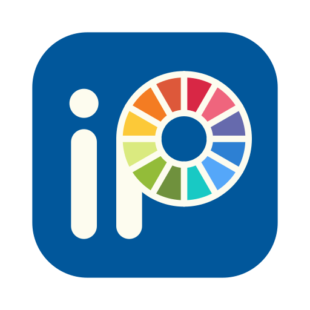
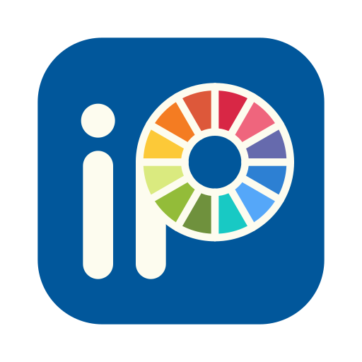

Nice to meet you, I’m Pedro Conde. I’m a New Media student with a passion for all forms of design, from graphic and web to UX/UI.
I’m driven by the desire to create meaningful visual experiences that connect with people, whether through thoughtful UX design or expressive illustration. My goal is to merge storytelling with usability, crafting work that feels both intuitive and emotionally resonant.
I want to use design as a tool not just for function, but for emotional impact. I’m especially interested in projects that blend creativity and empathy, where design solves problems, tells stories, and reflects the human experience in subtle, powerful ways.

 

Empathy — I believe great design begins with deep listening. Whether I’m building a layout or sketching a character, I always try to understand the person on the other end — what they feel, what they need, and what they expect. My process is rooted in human connection, not just visuals.
Clarity — I value intentional communication. I aim to remove noise and focus on what truly matters: structure, flow, and message. Whether in UI design or illustration, I avoid visual clutter in favor of meaningful hierarchy, space, and storytelling.
Adaptability — Design isn’t one-size-fits-all. I adapt quickly to new tools, styles, and feedback. Whether through collaboration or experimentation, I treat every challenge as a chance to learn and evolve while staying grounded in purpose.
I want the things I create to feel valuable. Not just in how they look or function, but in how they resonate. Whether it’s a digital interface or a single illustration, my goal is to make work that people connect with, reflect on, or carry with them in some way. If someone sees something I’ve made and feels like it matters, even a little, then I’ve done what I set out to do.
I’m currently seeking internship opportunities where I can contribute to real-world projects in UX, web, or visual storytelling. My goal is to apply my skills in a professional setting while continuing to grow as a designer and communicator.

I was born and raised in Manaus, the capital city of the Amazonas province in Brazil